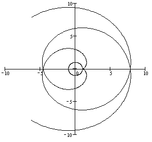

П19 4.№2.
Постройте кривую, заданную уравнением и найдите .
РЕШЕНИЕ:
,или
–
параметрические уравнения кривой.
Можно заметить, что ,
, ветви кривой, соответствующие  и
и  ,
симметричны относительно оси
,
симметричны относительно оси  .
.
и ,
симметричны относительно оси . При  ,
,  .
.
, .
Хотя и колеблются, многократно проходя
через нулевое значение, расстояние от начала координат до точки на кривой монотонно возрастает при . Кривая – эвольвента окружности
радиуса . График эвольвенты и
порождающей ее окружности при имеет
вид:

Ответ: